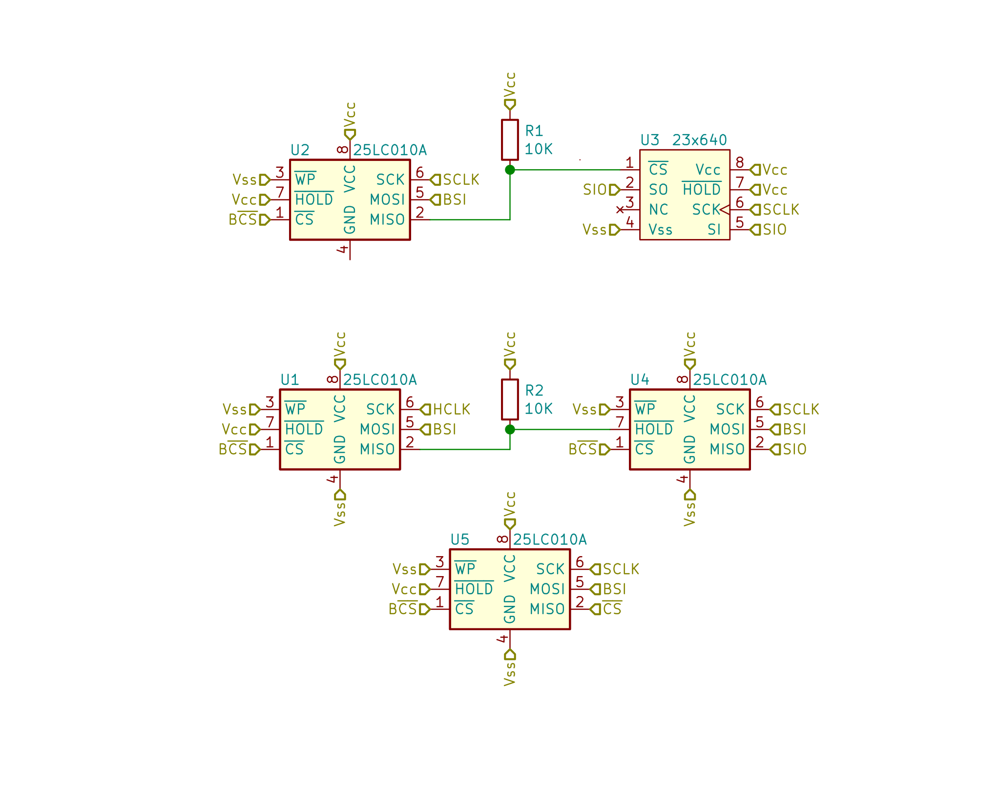

Miscellaneous Details
Schematic
4-bit Merge
Most of the derivation of various operations to byte-byte-jump was trivial and mechanical. I ran into one surprising difficulty, though. When it came time to implement 8-bit addition using 4-bit addition, the first step was to add the low 4-bits of two different bytes together. I couldn't find an obvious way to do this. 256-byte tables can only be indexed by one byte, not two. 64 KiB tables could be indexed byte two bytes, but they wouldn't fit into the address space.
A 4096-byte table worked, though. This was be indexed by two values: a 4-bit value and an 8-bit value. I could have used a 4096-byte table for every binary operation, but instead I used just one. This table merges together the first 4-bit index with the low 4 bits of the second index. The results can be used as index to any normal 256-byte table.
Using the merge table requires yet another table. The high 4 bits of the index will come from some byte; the new table overwrites the high 4 bits of that byte with the start of the merge table. This generates the high byte of the address in the merge table. The low byte is simply the second index.
Control Derivation
The SRAM has two basic operation cycles: read and write. A read operation consists of clocking 00000011 to the chip, then the 16-bit address. Afterwards, the chip will clock the byte at that address, then any successive addresses, to SO.
A write operation consists of clocking 00000010 to the chip, then the 16-bit address, then any number of bytes to write to successively increasing addresses.
Given this, to do byte-byte-jump, the SRAM and system need to have the following behavior. Note that all data is sent over the single SIO line to both the SRAM and the system.
- Read the instruction.
- Activate chip. Begin system read.
- Send 00000011 (read).
- Send the instruction pointer's address in the register memory.
- The chip sends the instruction pointer to the system.
- Deactivate chip.
- Activate chip.
- Send 00000010 (write).
- Send the address that will receive the instruction. The jump address overlaps the instruction pointer in the SRAM.
- The system sends 48 bits of data to the chip. This overwrites the instruction pointer as well.
- End system read. Deactivate chip.
- Read the value at the source address.
- Activate chip. Begin system read.
- Send 00000011 (read).
- Send the source address's address in the register memory.
- The chip sends the source address to the system.
- Deactivate chip.
- Activate chip.
- Send 00000010 (write).
- Send the address that will receive the source value.
- The system sends 8 bits of data to the chip.
- End system read. Deactivate chip.
- Store the value at the destination address.
- Activate chip. Begin system write.
- Send 00000011 (read).
- Send the destination address's address in the register memory.
- The chip sends the destination address to the system.
- Deactivate chip.
- Activate chip.
- Send 00000011 (read).
- Send the address that received the source value.
- The chip sends 8 bits of data to the system.
- End system write. Deactivate chip.
The layout of the SRAM and instruction can now be specified. For simplicity, let's begin the used region of the SRAM at address zero. The instruction pointer is the first value accessed, so place that at zero. Then, beginning each instruction with the instruction pointer establishes the overlap criterion of 1.8 and 1.9. If the value ends with the destination address, then the value location can follow immediately afterwards. This saves the second read cycle at 3.7, which can be skipped by allowing the chip to read from the destination address straight through to the value. Thus addresses in the instruction are ordered jump, source, destination.
No explicit mechanism for controlling the system bus has been established. We can crib a simplified mechanism for this from our SRAM. Give the system bus an active low select line, just like the chip. Read and write operations work exactly as on the chip, except a read is signalled by writing a 0, and a write by writing a 1.
Putting that all together, we get the following:
- Read the instruction.
- Activate system.
- Send 0.
- Activate chip.
- Send 00000011 00000000 00000000.
- The chip sends the instruction pointer.
- Deactivate chip.
- Activate chip.
- Send 00000010 00000000 00000000.
- The system sends 48 bits of data.
- Deactivate system. Deactivate chip.
- Read the value at the source address.
- Activate system.
- Send 0.
- Activate chip.
- Send 00000011 00000000 00000010.
- The chip sends the source address.
- Deactivate chip.
- Activate chip.
- Send 00000010 00000000 00000110.
- The system sends 8 bits of data.
- Deactivate system. Deactivate chip.
- Store the value at the destination address.
- Activate system.
- Send 1.
- Activate chip.
- Send 00000011 00000000 00000100.
- The chip sends 24 bits of data.
- Deactivate system. Deactivate chip.
A few more observations. First, there are three ways that SIO can be driven:
- The control system drives SIO, like in 1.2 and 1.4
- The SRAM chip drives SIO, like in 1.5
- The system drives SIO, like in 1.9
What happens if more than one of these sources drive SIO at the same time? Well, recall that SIO is driven by either connecting it to power or to ground. If all driving sources write the same value, nothing usual happens. But if SIO is connected to both power and ground simultaneously, this creates a short circuit between power and ground. A large amount of current can flow, generating a lot of waste power and potentially frying the chips, the Raspberry PI, or both. This situation needs to be avoided.
The system only writes to SIO if the SRAM is accepting input from SIO, and vice versa. Thus these two devices can never write conflicting bits to SIO, since neither can write and listen simultaneously. How about the control signals? These drive SIO one moment (1.4), but stop the next (1.5). The control behavior of SIO can be described by 2 bits: one that determines whether control is driving SIO, and one that determines the value if control is driving SIO. If the first bit is zero, the second doesn't matter.
Finally, note the oddity of the system's timing for reads and writes. The read tag comes in at 1.2, but the address doesn't come in until 25 clocks later at 1.5. The read values are delayed for 26 clocks until 1.9. However, note that exactly the same timing holds for the read at 2.2. The rules don't specify how system reads and writes need to happen; they can be as odd as we like. Odd timings also don't encode too much of the CPU's behavior into the system bus protocol; it's easy to imagine a different CPU than this one with more sophisticated control logic communicating across the same bus.
Putting that all together, we get the full set of control signals for the processor cycle. The whole thing takes around 250 clock cycles to execute a byte byte jump.
- Read the instruction.
- Activate system.
- Control begins driving SIO. Send 0.
- Activate chip.
- Send 00000011 00000000 00000000.
- Control stops driving SIO for 16 bits.
- Deactivate chip.
- Activate chip.
- Control starts driving SIO. Send 00000010 00000000 00000000.
- The system sends 48 bits of data.
- Deactivate system. Deactivate chip.
- Read the value at the source address.
- Activate system.
- Send 0.
- Activate chip.
- Send 00000011 00000000 00000010.
- The chip sends the source address.
- Deactivate chip.
- Activate chip.
- Send 00000010 00000000 00000110.
- The system sends 8 bits of data.
- Deactivate system. Deactivate chip.
- Store the value at the destination address.
- Activate system.
- Send 1.
- Activate chip.
- Send 00000011 00000000 00000100.
- The chip sends 24 bits of data.
- Deactivate system. Deactivate chip.
Control EEPROMs
There are 4 control signals in the above cycle: SRAM chip select, system chip select, SIO, and SIO control activation. If they are repeated indefinitely, then the SRAM will perform a series of byte byte jump operations, operating as a CPU. So how can these sequences be generated?
The SO pins of the EEPROMs for the SRAM CS and system CS can be directly connected to their respective pins. The EEPROMs can be clocked by SCLK; shortly after SCLK goes low, the next bit of signal will be driven on these pins. Thus the activation lines go low before the first bit of input indicated by the next rising clock edge, and they go back high after the last bit of input. So far so good.
If we were to directly connect an EEPROM to the SIO line, this would always drive that line; the system and SRAM chip would never get a turn to speak. Still, when it is the control's turn to speak, this arrangement does produce the correct signal. What remains is some way to disable the SIO EEPROM and reenable it temporarily.
The EEPROM's HOLD pin allows us to do just that. Setting this pin low accomplishes two things. First, shortly afterwards, the EEPROM stops driving it's SO pin. Second, the chip becomes insensitive to clock edges for as long as it is held. There is one big caveat: SCLK must have been low for at least 80ns before HOLD is driven low, and HOLD must return to high only while SCLK is low, and at least 40ns before it goes high again. We can hook up an EEPROM's SO to the HOLD pin of the SIO EEPROM, but the EEPROM datasheet does not guarantee that once the clock goes low, any minimum amount of time will pass before the SO changes. Thus we need one additional clock signal, HCLK, at least 80ns out of phase with SCLK. The SIO hold EEPROM is clocked by HCLK, guaranteeing that when HCLK goes low, at least 80ns have passed since SCLK went low. The other side of the timing constraint is obtained by running the clocks very slowly, so there is a relatively large amount of time between ticks.
Now, the main processor cycle takes 240 cycles, so the 1024-bit EEPROMs can contain 4 full cycles. However, the SIO EEPROM is insensitive to clock signals while held, so it only sees 123 of these cycles. This creates a slightly tricky situation; these two cycles need to be kept in sync across the EEPROMS.
The 123 SIO cycles will fit 4 times into 512 bits, and the main processor cycle will fit 4 times into 1024 bits. Thus we can maintain their sync if, at the end of every 1024-bit main cycle (once every 4 instructions), some bits are dedicated to syncing up the SIO EEPROM to the 512-bit line.
There are 512 - 4*123 = 20 bits left over on the SIO EEPROM and 1024 - 4*240 = 64 bits left over on the main EEPROMS. Thus the SIO EEPROM needs to be held for an additional 64 - 20 = 44 cycles to sync up. These additional hold bits can be placed anywhere within the last 64 bits of the SIO control EEPROM.
Bootstrapping
With the main loop of the CPU taken care of, there's one remaining concern: bootstrapping. How does the CPU get into that loop in the first place? There are two components to the answer.
First, if a read is issued to any of the control EEPROMs at 0x0000, they will continually output the desired control signal ad infinitum. Thus, boostrapping these chips consists of the system issuing the read command when it is brought up. This can be considered part of the responsibility of the system, and two additional lines, BCS and BSI can be allocated for this purpose.
Lastly, on powerup, the contents of the SRAM is nondeterministic. This means the instruction pointer is nondeterministic, and the first instruction will thus be read from a nondeterministic location. This could be rectified by providing additional bootstrapping control logic as with the EEPROMs, but there's a simpler approach. On the first read request after power on, the system can summarily return all zeroes. This moves the SRAM into a deterministic state and begins executing the program at location zero.